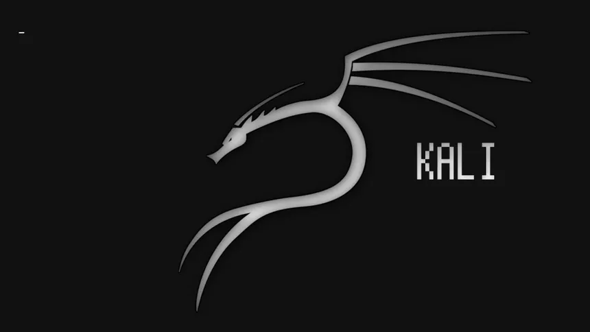

Kapitola 3: Software a OS
Software (též česky programové vybavení je v informatice sada všech počítačových programů používaných v počítači, které provádějí nějakou činnost. Software lze rozdělit na systémový software, který zajišťuje chod samotného počítače a jeho styk s okolím a na aplikační software, se kterým buď pracuje uživatel počítače nebo zajišťuje řízení nějakého stroje..

Software a data
- Definice software: v nejširším slova smyslu se jedná o vše, co v počítači není fyzickým hardwarem; tento pojem tak může zahrnovat nejen spustitelné programy, ale i samotná data.
- Povaha dat: data (např. obrázky, textové dokumenty) obvykle neobsahují strojové instrukce pro procesor, avšak hranice mezi nimi a programem může být nejasná, například u HTML stránek obsahujících skripty (JavaScript, PHP) nebo u komprimovaných ZIP souborů.
Škodlivý software
- Nežádoucí činnost: software se může chovat nesprávně buď kvůli nezamýšleným programátorským chybám, nebo proto, že byl jako škodlivý přímo navržen.
- Druhy hrozeb: mezi úmyslně vytvořený škodlivý software (malware) patří počítačové viry, spyware či trojské koně, které vznikají z nečestných úmyslů tvůrců.
- Příčiny úspěšných útoků: tvůrci malwaru zneužívají bezpečnostních chyb v aplikacích (prohlížeče, e-mailové klienty) a operačních systémech, nebo spoléhají na neznalost uživatele (tzv. sociální inženýrství).
- Obrana: protože běžný uživatel často nemá technické znalosti k rozpoznání hrozby, je nutné používat ochranné nástroje, jako jsou antivirové programy a antispyware, které se snaží škodlivý kód eliminovat.